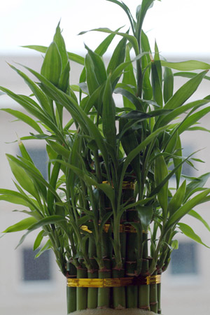

Previous || Next || Return to Mystery Plants || USC Herbarium
This Week's Mystery Plant | Dr. John B. Nelson Curator, USC Herbarium |
|
This time we have to give you the common name up front…because that's part of the story. It is very commonly called "Lucky bamboo," and it has become wildly popular as a house plant. It is unbelievably easy to grow, and it's available just about anywhere, especially at malls, roadside stands, flea-markets, and as a mail-order curiosity. This is a plant that is alleged to have very curious properties, including bringing its caretaker good luck (whence its most popular common name). The stems are green and cylindrical, with leafy branches produced at the nodes. It is easily marketed by just slicing up an intact stem. Most of the time, people "plant" these things in a vase with nothing but water, and sometimes a little gravel. This works well, at least for a while. The water needs to be changed every now and then, of course. The plants probably benefit from a little soluble fertilizer-- but not too much. Some plants are variegated, dark green with either yellow or white stripes. You can find bizarrely spiraled plants, too; the spiraled plants are grown in darkness, with only a little light available, and the potted plants rotated every now and then. As the plants grow toward the limited light source, they achieve a spiraled effect. Now to the name, "Lucky bamboo." Maybe it will bring you good luck, although I have my doubts. The "bamboo" part of this name is actually quite wrong, for the plant is not at all related to bamboo. All the true bamboos belong to the grass family. Our lucky little plant, a native to wet forests of Africa, is more aligned with the century-plants and yuccas, which are members of the agave family. |
 Photo by Clint Cook |